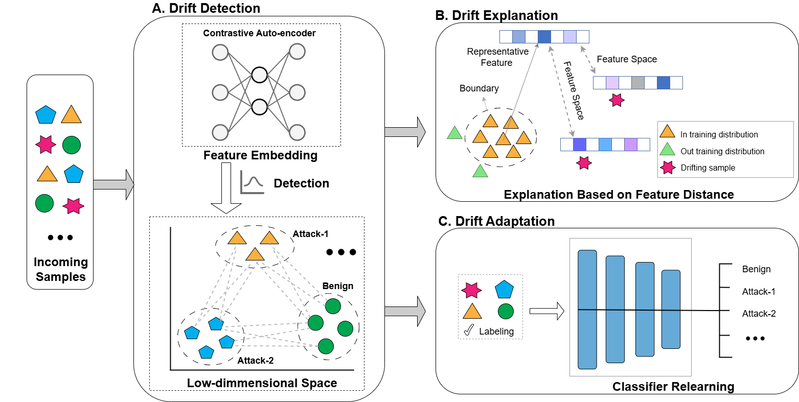

I conduct research at the National University of Singapore (NUS), advised by Prof. Lin Shao and collaborating with Zhixuan Xu. I earned my bachelor's in Computer Science and Technology from Sun Yat-sen University in June 2026.
My current research focuses on learning generalizable dexterous manipulation from human demonstrations.
🏄 Hobbies: Surfing, hiking, badminton, skiing, backpacking, and spending time with my dog.
🎓 I am actively seeking Fall 2027 PhD positions. For relevant opportunities or any thoughts related to my research, feel free to reach out!
Community-driven robot learning from browser-collected demonstrations, with a continually growing pool of manipulation data.
Generalizable Humanoid Loco-Manipulation via Spatial Perception and Decision-Making of Multi-Agent Large Model
Zhizhao Liang*, Yi-Lin Wei*, Xuhang Chen*, Mu Lin, Yi-Xiang He, Zhexi Luo, Jun-Hui Liu, Kun-Yu Lin, Wei-Shi Zheng† ECCV 2026 (Oral) arXiv / project page
Generalizable whole-body mobile manipulation for humanoid robots, without task-specific real-robot data.

DriftTrace: Combating Concept Drift in Security Applications through Detection and Explanation
Yuedong Pan, Lixin Zhao†, Tao Leng, Zhexi Luo, Lijun Cai, Aimin Yu, Dan Meng
IEEE Transactions on Information Forensics and Security (T-IFS), 2026 IEEE Xplore
Detecting and explaining concept drift in security applications, helping models adapt to changing data.